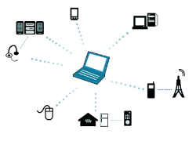

WPAN
Una Red de Área Personal Inalámbrica (WPAN) es una tecnología de red que permite la comunicación inalámbrica de corto alcance entre dispositivos electrónicos personales. Se utiliza para conectar dispositivos electrónicos que se encuentran físicamente cerca unos de otros, creando una red personal inalámbrica.
